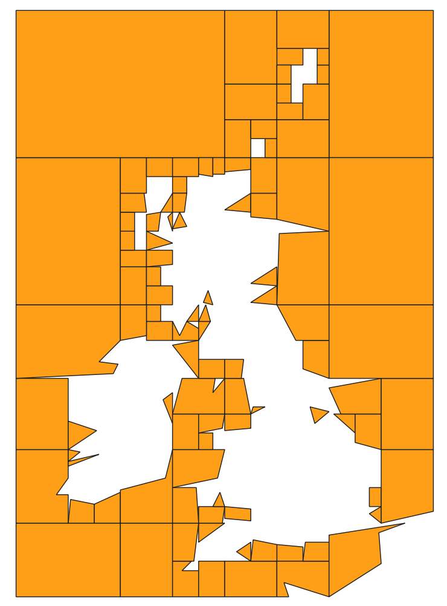
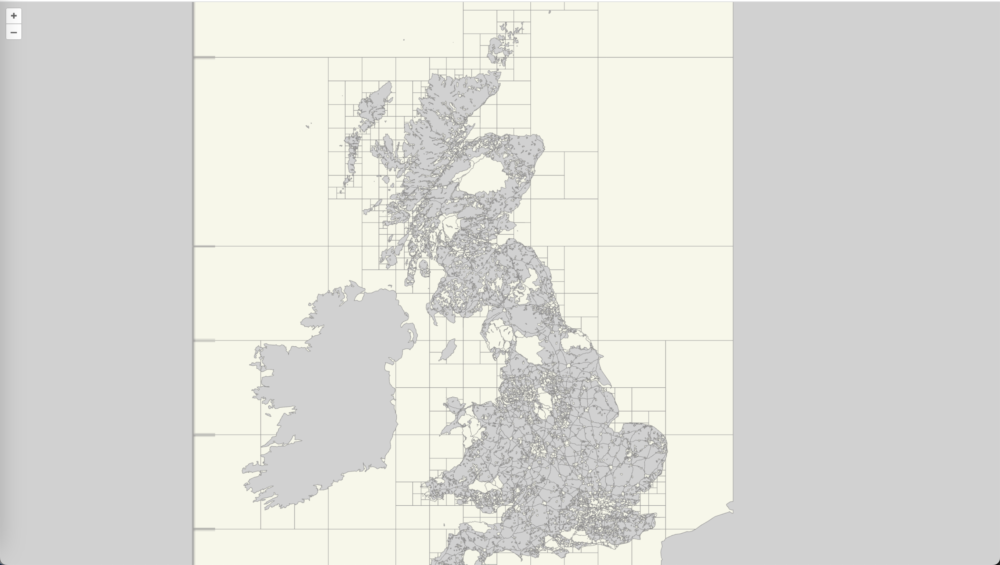

OGC API - Tiles¶
Público-alvo
Estudantes familiarizados com serviços web e APIs, que desejam ter uma visão geral da norma OGC API - Tiles
Objetivos de Aprendizagem
Ao concluir o módulo, os estudantes serão capazes de:
- Explicar o que é a norma OGC API - Tiles
- Descrever o que pode ser feito com implementações da OGC API - Tiles
- Compreender os principais recursos oferecidos por implementações da OGC API - Tiles
- Compreender como obter uma descrição das capacidades de uma implementação da OGC API - Tiles
- Compreender como fazer pedidos a uma implementação da OGC API - Features
- Conseguir encontrar um endpoint da OGC API - Tiles e utilizá-lo através de um cliente
Introdução¶
A OGC API - Tiles é uma norma que define blocos de construção para criar APIs Web que suportam a recuperação de informação geoespacial sob a forma de tiles. São suportadas diferentes formas de informação geoespacial, como tiles de entidades vetoriais («tiles vetoriais»), coverages, mapas (ou imagens) e outros tipos de informação geoespacial. Embora possa ser utilizada independentemente, os blocos de construção do OGC API - Tiles podem ser combinados com outras normas e normas candidatas OGC API para capacidades adicionais ou para aumentar a interoperabilidade para tipos específicos de dados. A norma OGC API - Tiles referencia a norma OGC Two Dimensional Tile Matrix Set (TMS) and Tileset Metadata, que define modelos lógicos e codificações para especificar tile matrix sets e descrever tilesets.
Note
Este módulo tutorial não tem a intenção de substituir a própria norma OGC API - Tiles - Parte 1: Core. O tutorial concentra-se intencionalmente num subconjunto de capacidades com o propósito de ser uma iniciação à utilização da norma. Consulte a norma da OGC API - Tiles - Parte 1: Core para mais detalhes.
Estes conceitos são o cerne desta norma:
- Tiling Scheme: esquema utilizado para particionar o espaço em tiles individuais, podendo incluir múltiplos níveis de detalhe. Um tiling scheme é geralmente definido sobre um SRC, embora possa utilizar outros sistemas de referência espacial.
- Tile Matrix: grelha de tiling num determinado sistema de referência de coordenadas 2D, associada a uma escala específica e a um particionamento espacial (por exemplo: tiling scheme).

- Tile Matrix Set: tiling scheme consistindo num conjunto de tile matrices definidas em diferentes escalas, cobrindo aproximadamente a mesma área e tendo um sistema de referência de coordenadas comum. Um Tile Matrix tem um identificador alfanumérico único no Tile Matrix Set. Algumas implementações baseadas em tiles preferem utilizar o número de nível de zoom.

- Tile Set: conjunto de tiles resultantes da aplicação de tiling a dados de acordo com um tiling scheme particular.
Note
- Uma tile matrix pode ser implementada como um conjunto de ficheiros de imagem (por exemplo, PNG ou JPEG) numa pasta de ficheiros, cada ficheiro a representar uma único tile.
- Em algumas normas, o conceito de Tile Matrix Set é designado por pirâmide de imagens.
Antecedentes¶
Histórico
A norma OGC API - Tiles é uma sucessora da norma Web Map Tile Service (WMTS) da OGC, focando-se em blocos de construção REST API simples e reutilizáveis que podem ser descritos utilizando a especificação OpenAPI. Enquanto que o WMTS se focava em tiles de mapa, o standard OGC API - Tiles foi concebido para suportar qualquer forma de dados em tiles.
Versões
A versão 1.0.0 do OGC API - Tiles - Parte 1: Core é a versão mais recente
Suite de testes
Está disponível uma suite de testes para:
Implementações
As implementações podem ser encontradas na página de implementações.
Utilização¶
Existem, pelo menos, duas formas de abordar uma implementação da norma OGC API - Tiles.
- Ler a página de aterragem, procurar ligações, seguir as mesmas e descobrir novas ligações até que o recurso desejado seja encontrado
- Ler um documento de definição de API Web que especifique uma lista de caminhos e modelos de caminho para recursos.
Uma vez descobertos os recursos relevantes, recupere a lista
de esquemas de tilagem disponíveis a partir do recurso
/tileMatrixSets para identificar o tiling scheme de interesse. Recupere os detalhes do tiling scheme específico
com /tileMatrixSets/{tileMatrixSetId}.
Uma vez identificado um tiling scheme de interesse, pode recuperar
os metadados do tileset para esse esquema através de
/tiles/{tileMatrixSetId} e também recuperar
tiles individuais com
/tiles/{tileMatrixSetId}/{tileMatrix}/{tileRow}/{tileCol}
Relação com outras normas da OGC¶
Embora a norma OGC API - Tiles seja concebida como um bloco de construção que pode ser aproveitado por (ou com) outras normas da OGC API, adicionando precisões sobre tipos específicos de dados disponíveis como tiles (por exemplo, as normas OGC API - Features e OGC API - Maps e a norma candidata OGC API - Coverages), as classes de conformidade definidas nesta norma são ainda concretas o suficiente para tornar possível suportar a distribuição e solicitação de vários tipos de dados em tiles, incluindo coverages, entidades vetoriais e mapas, confiando estritamente no conteúdo aqui presente e na normaOGC Two Dimensional Tile Matrix Set and Tile Set Metadata 2.0.
Visão geral dos recursos¶
A OGC API - Tiles - Parte 1: Core define os recursos listados na tabela seguinte.
| Recurso | Método | Caminho |
|---|---|---|
| Página de aterragem | GET | / |
| Declaração de conformidade | GET | /conformance |
| Definição da API | GET | /api |
| Conjuntos de tile matrix | GET | /tileMatrixSets |
| Conjunto de tile matrix | GET | /tileMatrixSets/{tileMatrixSetId} |
| Tileset de dados | GET | /tiles |
| Metadados do tileset de dados | GET | /tiles/{tileMatrixSetId} |
| Tile de entidade de dados | GET | /tiles/{tileMatrixSetId}/{tileMatrix}/{tileRow}/{tileCol} |
| Lista de tilesets de mapa | GET | /map/tiles |
| Metadados do tileset de mapa | GET | /map/tiles/{tileMatrixSetId} |
| Tile de mapa | GET | /map/tiles/{tileMatrixSetId}/{tileMatrix}/{tileRow}/{tileCol} |
| Coleções | GET | /collections |
| Coleção | GET | /collections/{collectionId} |
| Lista de tilesets de entidades | GET | /collections/{collectionId}/tiles |
| Metadados do tileset de entidades | GET | /collections/{collectionId}/tiles/{tileMatrixSetId} |
| Tile de entidade | GET | /collections/{collectionId}/tiles/{tileMatrixSetId}/{tileMatrix}/{tileRow}/{tileCol} |
| Lista de tilesets de mapa | GET | /collections/{collectionId}/map/tiles |
| Metadados do tileset de mapa | GET | /collections/{collectionId}/map/tiles/{tileMatrixSetId} |
| Tile de mapa | GET | /collections/{collectionId}/map/tiles/{tileMatrixSetId}/{tileMatrix}/{tileRow}/{tileCol} |
| Lista de tilesets de coverage | GET | /collections/{collectionId}/coverage/tiles |
| Metadados do tileset de coverage | GET | /collections/{collectionId}/coverage/tiles/{tileMatrixSetId} |
| Tile de coverage | GET | /collections/{collectionId}/coverage/tiles/{tileMatrixSetId}/{tileMatrix}/{tileRow}/{tileCol} |
Exemplo¶
O servidor de demonstração publica dados de entidades em tiles através de uma interface que está em conformidade com a OGC API - Tiles.
Um exemplo de pedido que pode ser utilizado para recuperar dados, referenciados ao WebMercatorQuad, a partir da coleção OS Zoomstack é https://demo.ldproxy.net/zoomstack/tiles/WebMercatorQuad/0/0/0?f=mvt
Neste caso, os dados são codificados no formato Mapbox Vector Tiles (MVT).
Uma vez descarregados, a aplicação cliente pode, em seguida, exibir ou processar os dados.

Recursos¶
Página de aterragem¶
Dado que o OGC API - Tiles utiliza a OGC API - Common como bloco de construção, consulte a OGC API - Features para uma explicação detalhada de uma implementação de exemplo.
Declarações de conformidade¶
Dado que a OGC API - Tiles utiliza a OGC API - Common como bloco de construção, consulte a OGC API - Features para uma explicação detalhada de uma implementação de exemplo.
Definição da API¶
Dado que a OGC API - Tiles utiliza a OGC API - Common como bloco de construção, consulte a OGC API - Features para uma explicação detalhada de uma implementação de exemplo.
Coleções¶
Dado que a OGC API - Tiles utiliza a OGC API - Common como bloco de construção, consulte a OGC API - Features para uma explicação detalhada de uma implementação de exemplo.
Coleção¶
Dado que a OGC API - Tiles utiliza a OGC API - Common como bloco de construção, consulte a OGC API - Features para uma explicação detalhada de uma implementação de exemplo.
Tiling Schemes¶
Este endpoint recupera uma lista de ligações para as descrições dos tile matrix sets suportados pela API Web da OGC. Podem ser um ou vários dos tile matrix sets bem conhecidos listados no Anexo D do OGC Two Dimensional Tile Matrix Set and Tile Set Metadata, ou personalizados.
Como exemplo, podemos ver um excerto da resposta a este pedido: https://demo.ldproxy.net/daraa/tileMatrixSets?f=json
"tileMatrixSets": [
{
"title": "Google Maps Compatible for the World",
"id": "WebMercatorQuad",
"uri": "http://www.opengis.net/def/tilematrixset/OGC/1.0/WebMercatorQuad",
"links": [
{
"rel": "self",
"title": "Tile matrix set 'WebMercatorQuad'",
"href": "https://demo.ldproxy.net/daraa/tileMatrixSets/WebMercatorQuad"
}
]
},
{
"title": "CRS84 for the World",
"id": "WorldCRS84Quad",
"uri": "http://www.opengis.net/def/tilematrixset/OGC/1.0/WorldCRS84Quad",
"links": [
{
"rel": "self",
"title": "Tile matrix set 'WorldCRS84Quad'",
"href": "https://demo.ldproxy.net/daraa/tileMatrixSets/WorldCRS84Quad"
}
]
},
{
"title": "World Mercator WGS84 (ellipsoid)",
"id": "WorldMercatorWGS84Quad",
"uri": "http://www.opengis.net/def/tilematrixset/OGC/1.0/WorldMercatorWGS84Quad",
"links": [
{
"rel": "self",
"title": "Tile matrix set 'WorldMercatorWGS84Quad'",
"href": "https://demo.ldproxy.net/daraa/tileMatrixSets/WorldMercatorWGS84Quad"
}
]
}
]
Se adicionarmos o id do tile matrix set a este URL, obteremos a descrição de um tile matrix set específico, como podemos ver no exemplo abaixo, gerado com este pedido:
https://demo.ldproxy.net/daraa/tileMatrixSets/WebMercatorQuad?f=json
{
"title": "Google Maps Compatible for the World",
"id": "WebMercatorQuad",
"crs": "http://www.opengis.net/def/crs/EPSG/0/3857",
"wellKnownScaleSet": "http://www.opengis.net/def/wkss/OGC/1.0/GoogleMapsCompatible",
"uri": "http://www.opengis.net/def/tilematrixset/OGC/1.0/WebMercatorQuad",
"tileMatrices": [
{
"id": "0",
"tileWidth": 256,
"tileHeight": 256,
"matrixWidth": 1,
"matrixHeight": 1,
"scaleDenominator": 559082264.028717,
"cellSize": 156543.033928041,
"pointOfOrigin": [
-20037508.3427892,
20037508.3427892
],
"cornerOfOrigin": "topLeft"
},
{
"id": "1",
"tileWidth": 256,
"tileHeight": 256,
"matrixWidth": 2,
"matrixHeight": 2,
"scaleDenominator": 279541132.014358,
"cellSize": 78271.5169640204,
"pointOfOrigin": [
-20037508.3427892,
20037508.3427892
],
"cornerOfOrigin": "topLeft"
},
}
Tilesets de Dados¶
Estes endpoints definem como uma lista de tilesets pode ser associada a um conjunto de dados / landing page da OGC API.
Para tiles vetoriais, podemos solicitar tiles utilizando o endpoint /tiles. Como exemplo, esta é parte da resposta desencadeada por este pedido:
https://demo.ldproxy.net/daraa/tiles?f=json
{
"title": "Daraa",
"description": "This is a test dataset used in the Open Portrayal Framework thread in the OGC Testbed-15 as well as the OGC Vector Tiles Pilot Phase 2. The data is based on OpenStreetMap data from the region of Daraa, Syria, converted to the Topographic Data Store schema of NGA.",
"tilesets": [
{
"links": [
{
"rel": "self",
"title": "Access the data as tiles in the tile matrix set 'WebMercatorQuad'",
"href": "https://demo.ldproxy.net/daraa/tiles/WebMercatorQuad"
},
{
"rel": "http://www.opengis.net/def/rel/ogc/1.0/tiling-scheme",
"title": "Definition of the tiling scheme",
"href": "https://demo.ldproxy.net/daraa/tileMatrixSets/WebMercatorQuad"
},
{
"rel": "item",
"type": "application/vnd.mapbox-vector-tile",
"title": "Mapbox vector tiles; the link is a URI template where {tileMatrix}/{tileRow}/{tileCol} is the tile in the tiling scheme 'WebMercatorQuad'",
"href": "https://demo.ldproxy.net/daraa/tiles/WebMercatorQuad/{tileMatrix}/{tileRow}/{tileCol}?f=mvt",
"templated": true
}
],
Podemos solicitar metadados sobre um tileset particular, adicionando o ID do tile matrix set: /tiles/{tileMatrixSetId}. Por exemplo, o exemplo abaixo é desencadeado por este pedido:
https://demo.ldproxy.net/daraa/tiles/WebMercatorQuad?f=json
{
"tilejson": "3.0.0",
"tiles": [
"https://demo.ldproxy.net/daraa/tiles/WebMercatorQuad/{z}/{y}/{x}?f=mvt"
],
"vector_layers": [
{
"id": "AeronauticCrv",
"fields": {
"id": "Integer",
"F_CODE": "String",
"ZI001_SDV": "String",
"UFI": "String",
"ZI005_FNA": "String",
"FCSUBTYPE": "Integer",
"ZI006_MEM": "String",
"ZI001_SDP": "String"
},
"description": "",
"maxzoom": 18,
"minzoom": 6,
"geometry_type": "lines"
},
Finalmente, podemos solicitar os dados efetivos, neste caso um tile vetorial, utilizando /tiles/{tileMatrixSetId}/{tileMatrix}/{tileRow}/{tileCol}.
Podemos reutilizar os mesmos endpoints para tiles de mapa ou de coverage, mas nesses casos precisamos de introduzir map ou coverage no caminho.
Lista de tilesets de mapa:
/map/tiles
Metadados do tileset de mapa:
/map/tiles/{tileMatrixSetId}
Tile de mapa:
/map/tiles/{tileMatrixSetId}/{tileMatrix}/{tileRow}/{tileCol}
Tilesets GeoData¶
Estes endpoints definem como uma lista de tilesets pode ser associada a uma coleção da OGC API.
Para tiles vetoriais, pode recuperar a lista de tilesets de uma determinada coleção com /collections/{collectionId}/tiles. Por exemplo, a amostra abaixo é extraída da resposta a este pedido:
https://demo.ldproxy.net/daraa/collections/StructureSrf/tiles?f=json
{
"title": "Structure (Surfaces)",
"tilesets": [
{
"links": [
{
"rel": "self",
"title": "Access the data as tiles in the tile matrix set 'WebMercatorQuad'",
"href": "https://demo.ldproxy.net/daraa/collections/StructureSrf/tiles/WebMercatorQuad"
},
{
"rel": "http://www.opengis.net/def/rel/ogc/1.0/tiling-scheme",
"title": "Definition of the tiling scheme",
"href": "https://demo.ldproxy.net/daraa/tileMatrixSets/WebMercatorQuad"
},
{
"rel": "item",
"type": "application/vnd.mapbox-vector-tile",
"title": "Mapbox vector tiles; the link is a URI template where {tileMatrix}/{tileRow}/{tileCol} is the tile in the tiling scheme 'WebMercatorQuad'",
"href": "https://demo.ldproxy.net/daraa/collections/StructureSrf/tiles/WebMercatorQuad/{tileMatrix}/{tileRow}/{tileCol}?f=mvt",
"templated": true
}
],
Os metadados do tileset de um tile matrix set específico podem ser recuperados adicionando o ID do tile matrix set: /collections/{collectionId}/tiles/{tileMatrixSetId}. Por exemplo, a seguinte resposta foi extraída deste pedido:
https://demo.ldproxy.net/daraa/collections/StructureSrf/tiles/WebMercatorQuad?f=json
"links": [
{
"rel": "self",
"type": "application/json",
"title": "This document",
"href": "https://demo.ldproxy.net/daraa/collections/StructureSrf/tiles/WebMercatorQuad?f=json"
},
{
"rel": "alternate",
"type": "application/vnd.mapbox.tile+json",
"title": "This document as TileJSON",
"href": "https://demo.ldproxy.net/daraa/collections/StructureSrf/tiles/WebMercatorQuad?f=tilejson"
},
{
"rel": "http://www.opengis.net/def/rel/ogc/1.0/tiling-scheme",
"title": "Definition of the tiling scheme",
"href": "https://demo.ldproxy.net/daraa/tileMatrixSets/WebMercatorQuad"
},
{
"rel": "item",
"type": "application/vnd.mapbox-vector-tile",
"title": "Mapbox vector tiles; the link is a URI template where {tileMatrix}/{tileRow}/{tileCol} is the tile in the tiling scheme '{{tileMatrixSetId}}'",
"href": "https://demo.ldproxy.net/daraa/collections/StructureSrf/tiles/WebMercatorQuad/{tileMatrix}/{tileRow}/{tileCol}?f=mvt",
"templated": true
}
],
"dataType": "vector",
"tileMatrixSetId": "WebMercatorQuad",
"tileMatrixSetURI": "http://www.opengis.net/def/tilematrixset/OGC/1.0/WebMercatorQuad",
"tileMatrixSetLimits": [
{
"tileMatrix": "6",
"minTileRow": 25,
"maxTileRow": 25,
"minTileCol": 38,
"maxTileCol": 38,
"numberOfTiles": 1
},
{
"tileMatrix": "7",
"minTileRow": 51,
"maxTileRow": 51,
"minTileCol": 76,
"maxTileCol": 76,
"numberOfTiles": 1
},
Finalmente, podemos solicitar os dados efetivos, neste caso uma tile vetorial, utilizando /collections/{collectionId}/tiles/{tileMatrixSetId}/{tileMatrix}/{tileRow}/{tileCol}.
Assim como nos tilesets de dados, podemos reutilizar os mesmos endpoints para tiles de mapa ou de coverage, mas nesses casos precisamos de introduzir map ou coverage no caminho.
Lista de tilesets de mapa:
/collections/{collectionId}/map/tiles
Metadados do tileset de mapa:
/collections/{collectionId}/map/tiles/{tileMatrixSetId}
Tile de mapa:
/collections/{collectionId}/map/tiles/{tileMatrixSetId}/{tileMatrix}/{tileRow}/{tileCol}
Pode ver aqui um exemplo de um pedido de uma lista de tilesets (de mapa) e aqui um exemplo de um pedido de metadados de tilesets (de mapa).
Utilização por clientes¶
Nesta secção vamos demonstrar como aceder à OGC API - Tiles utilizando o cliente OpenLayers.
OpenLayers¶
As versões mais recentes do OpenLayers suportam tanto tiles OGC Vector como Map Tiles, com as classes OGCVectorTile e OGCMapTile.
Um exemplo disto pode ser visto na página de exemplo no site do OpenLayers.
import MVT from 'ol/format/MVT.js';
import Map from 'ol/Map.js';
import OGCVectorTile from 'ol/source/OGCVectorTile.js';
import VectorTileLayer from 'ol/layer/VectorTile.js';
import View from 'ol/View.js';
const map = new Map({
target: 'map',
layers: [
new VectorTileLayer({
source: new OGCVectorTile({
url: 'https://demo.ldproxy.net/zoomstack/tiles/WebMercatorQuad',
format: new MVT(),
}),
background: '#d1d1d1',
style: {
'stroke-width': 0.6,
'stroke-color': '#8c8b8b',
'fill-color': '#f7f7e9',
},
}),
],
view: new View({
center: [0, 0],
zoom: 1,
}),
});

Este exemplo mostra ambos, tiles de Mapa e Vetoriais, que não utilizam o SRC WGS84.
Resumo¶
A OGC API - Tiles especifica uma norma para APIs Web que fornecem tiles de informação geoespacial. São suportadas diferentes formas de informação geoespacial, como tiles de entidades vetoriais («tiles vetoriais»), coverages, mapas (ou imagens) e, potencialmente, eventualmente, tipos adicionais de tiles de informação geoespacial. Este aprofundamento proporcionou uma visão geral da norma e dos vários recursos e endpoints suportados. Mostra também um exemplo de como aceder a um endpoint de OGC API - Tiles, utilizando um cliente JavaScript.